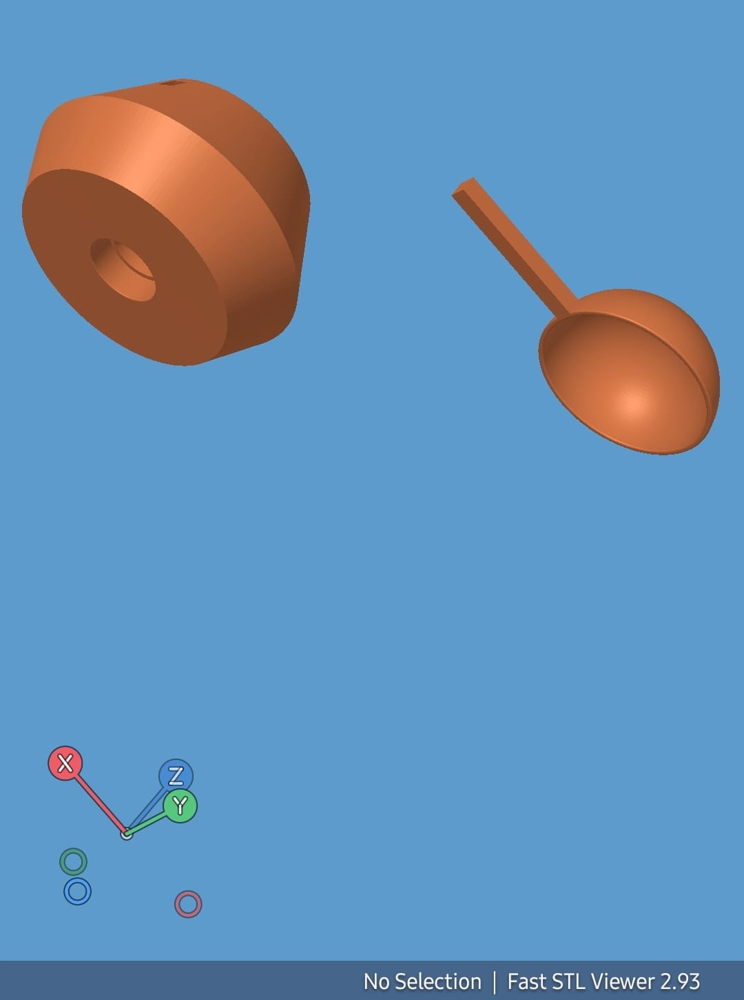
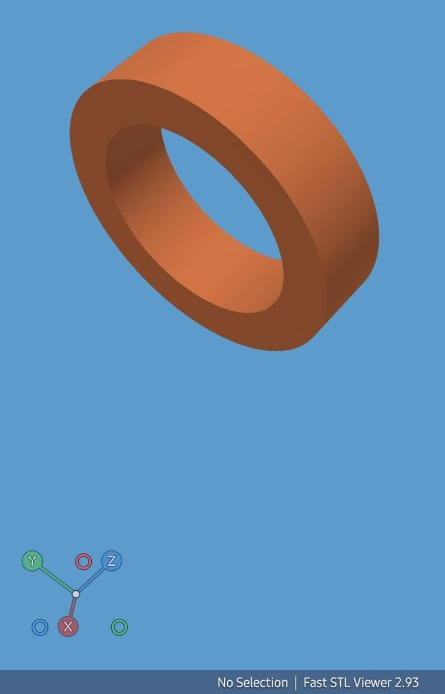

El viento mueve
Las cazoletas capturan el viento y hacen girar el rotor del anemómetro.
Un proyecto para explorar cómo se mide el viento, la temperatura y la humedad. Electrónica, diseño 3D y curiosidad en una misma estación.

¿Cómo podemos transformar lo que pasa a nuestro alrededor en información?
La propuesta es desarrollar una estación meteorológica basada en ESP32. El diseño combina sensores electrónicos con una estructura de piezas impresas en 3D para estudiar variables del ambiente.
El anemómetro utiliza un módulo Hall KY-003 para detectar el paso de un imán. Al contar los pulsos se puede conocer la frecuencia de giro; para convertirla en velocidad del viento, es necesario calibrar el conjunto.
Un proyecto en desarrollo.
Esta página reúne la propuesta y el material de referencia. La construcción, las conexiones y la calibración deben verificarse antes de presentar mediciones.
Las cazoletas capturan el viento y hacen girar el rotor del anemómetro.
Un imán pasa frente al KY-003 y produce señales que permiten contar las vueltas.
La placa cuenta los pulsos por intervalo. Una calibración permitirá relacionarlos con la velocidad del viento.
Los elementos que forman
parte de la propuesta.
El microcontrolador central recibe las señales y organiza las lecturas. El ESP32 clásico integra Wi-Fi de 2,4 GHz y Bluetooth, útiles para una futura transmisión de datos.
La alimentación de la placa depende del modelo de desarrollo. Debe verificarse su pinout antes de conectar los sensores.
Descargar datasheet ESP32 · PDF ↓
Este módulo utiliza el efecto Hall para detectar la presencia de un campo magnético sin contacto mecánico. Un imán situado en el rotor permite generar eventos de paso.
La ficha adjunta describe una variante con A3141. El integrado y la polaridad de activación deben confirmarse en el módulo utilizado. La velocidad del viento requiere calibración.
Descargar ficha KY-003 · PDF ↓
Integra un elemento de humedad y un sensor de temperatura. Entrega datos digitales mediante una línea de comunicación con temporización propia.
Valores de la ficha adjunta. Debe instalarse en un lugar ventilado, protegido de lluvia y radiación solar directa; no es un sensor impermeable.
Descargar datasheet DHT11 · PDF ↓Los documentos aportados incluyen el circuito SX1276 y el módulo RA-02. Son referencias distintas: el RA-02 suele integrar un SX1278, por lo que no deben confundirse sus bandas ni sus especificaciones.
Estos transceptores se comunican con el microcontrolador mediante SPI. Una implementación requiere dos equipos compatibles, antenas adecuadas y una frecuencia permitida en el lugar de uso. El alcance depende del entorno y de la configuración; no se ha validado todavía en este proyecto.
Una estructura pensada desde sus partes: captar el movimiento, alojar los sensores y facilitar el montaje. El diseño se explora mediante modelos 3D y referencias de ensamblaje.

01 / ROTOR02 / CAZOLETALa geometría final, las tolerancias y la respuesta al viento requieren validación física.

La vista en corte ayuda a estudiar la disposición de los elementos y su relación con la carcasa.

El soporte del eje y la ubicación del sensor son puntos a revisar durante el ensamblaje.
Los modelos STL permiten revisar la geometría y planificar la fabricación. El material de impresión y sus parámetros deberán elegirse según las condiciones de uso.
Descarga los modelos originales en formato STL.
Fuentes de consulta para comprender los principios y los componentes del proyecto.